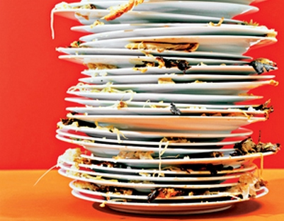

New ideas for loading dishwashers are being presented constantly, and as such many terrible constants have slipped into our plate and bowl cleaning routine. This article is an attempt to clean up some of the
This is the most common sort of code available for dishwasher loading programs
As you can see this presents a number of inconsistencies, most notably that it has nothing to do with loading the dishwasher. While this has been pushed as a new, human free dishloading method, it is, in fact, a way to recode the front panel of an outdated dishwasher. This has resulted in the previously unexplainable growth in the nations dirty dish piles.
The current state of the nations kitchens
After many ours of arduous research our scientist have discovered an ancient method, tenatively labeled as water and soap. More reasearch is needed before the full effects of this method are known, but with the nation facing a platar pitfal, quick action was neccesary.
NOTE:The water and soap method may have fallen out of knowledge with the current generation, but perhaps not with the older generation, and perhaps even your roommates may know of it! Please ask around.
While the current situation has been ongoing for what seems like ages, not so long ago there were people whos jobs were...
For the latest advancements in our water and soap method, please keep at least part of your brainchannel tunned to Space Communism Weekly's Science, Material Supply, and Ardvark sections. We expect to be bringing out refinements daily.
If you like this lifechanging advice, please share this on Twitter!